CODING AGENTS AS PIXEL WORLD MODELS
traex/GPT-6.1-Sol · common50_0022
点击播放 · 原生 RGB 像素
逐轮保存的候选
回放视频、检查图与代码变化。
每份候选均可单独播放。实际图片检查记录在下方工具轨迹中。
候选 01播放与检查图
点击播放 · 原生 RGB 像素

展开代码变化
--- 上一保存版本
+++ 本次保存版本
@@ -0,0 +1,164 @@
+from pathlib import Path
+import numpy as np
+from PIL import Image, ImageDraw, ImageFilter
+from scipy.ndimage import map_coordinates, gaussian_filter, distance_transform_edt
+from scipy.spatial import Delaunay
+import artifact_io
+
+ROOT=Path(__file__).resolve().parent
+SRC=np.asarray(Image.open(ROOT/'first_frame.png').convert('RGB')).astype(float)
+H=W=256
+Y,X=np.mgrid[:H,:W].astype(float)
+
+def poly(points,blur=.45):
+ im=Image.new('L',(W*4,H*4),0)
+ ImageDraw.Draw(im).polygon([(int(x*4),int(y*4)) for x,y in points],fill=255)
+ im=im.resize((W,H),Image.Resampling.LANCZOS)
+ if blur: im=im.filter(ImageFilter.GaussianBlur(blur))
+ return np.asarray(im).astype(float)/255
+
+left=poly([(64,255),(70,239),(80,220),(85,208),(89,196),(94,182),
+ (98,174),(105,168),(111,165),(115,167),(113,173),(112,177),
+ (119,177),(124,178),(123,184),(119,193),(116,199),(109,207),
+ (103,217),(98,231),(87,255)])
+right=poly([(256,203),(245,205),(229,198),(218,195),(207,191),
+ (201,185),(195,181),(192,178),(187,178),(184,182),(179,181),
+ (176,184),(175,188),(179,193),(185,198),(195,203),(207,211),
+ (221,221),(241,235),(251,231),(256,224)])
+packet=poly([(128,154),(133,155),(135,156),(141,158),(146,160),
+ (143,167),(140,173),(140,176),(144,179),(145,183),
+ (140,184),(137,180),(135,183),(132,188),(127,191),
+ (121,188),(123,182),(116,181),(113,181),(114,177),
+ (119,169),(123,162),(126,158)],.25)
+# The printed sachet, skin and watch all retain their source RGB textures.
+# Uncovering the table uses its observed illumination, not a new scene.
+remove=np.maximum.reduce([left,right,packet])
+remove=gaussian_filter((remove>.015).astype(float),1.4)
+# Estimate tabletop colour over its unoccluded area.
+edge=172+X*.218
+valid=(Y>110)&(Y<edge-4)&(remove<.003)
+valid &= ~((X>52)&(X<109)&(Y<174))
+valid &= ~((X>143)&(Y<174))
+valid &= ~((X>228)&(Y<200))
+valid &= ~((X<44)&(Y<126))
+xx=(X-128)/128; yy=(Y-166)/90
+features=np.stack([np.ones_like(X),xx,yy,xx*yy,xx*xx,yy*yy],-1)
+coef=np.linalg.lstsq(features[valid],SRC[valid],rcond=None)[0]
+for _ in range(3):
+ res=SRC[valid]-features[valid]@coef
+ wt=1/(1+(np.linalg.norm(res,axis=1)/12)**2)
+ coef=np.linalg.lstsq(features[valid]*wt[:,None],SRC[valid]*wt[:,None],rcond=None)[0]
+table=features@coef
+# Transfer fine tabletop texture from clean visible areas.
+noise=SRC-gaussian_filter(SRC,(2.2,2.2,0))
+texture=noise[(Y.astype(int)+13)%256,(X.astype(int)+43)%256]
+texture=np.clip(texture,-2.5,2.5)
+table+=texture*.6
+# Recover obscured lap pixels by copying the nearest safe, same-surface pixels.
+lapok=(Y>edge+4)&(remove<.001)
+_,idx=distance_transform_edt(~lapok,return_indices=True)
+lap=SRC[idx[0],idx[1]]
+lap=gaussian_filter(lap,(1.4,1.4,0))
+# Match the soft near edge of the actual wooden surface.
+f=1/(1+np.exp(np.clip((Y-edge)/.65,-40,40)))
+fill=table*f[...,None]+lap*(1-f[...,None])
+cleanup=np.clip(remove*1.12,0,1)
+PLATE=SRC*(1-cleanup[...,None])+fill*cleanup[...,None]
+
+# Piecewise affine textured limbs. At the bottom of the view the right
+# forearm is anchored, while the hand can reach across the tabletop.
+def limb(dx,dy,kind):
+ xs=np.arange(-16,273,24,dtype=float)
+ ys=np.arange(-16,273,16,dtype=float)
+ gy,gx=np.meshgrid(ys,xs,indexing='ij')
+ p=np.stack([gx.ravel(),gy.ravel()],1)
+ q=p.copy()
+ if kind=='right':
+ w=np.clip((258-p[:,1])/54,0,1)
+ # The wrist follows the hand while the distal arm remains attached.
+ q[:,0]+=dx*w
+ q[:,1]+=dy*w
+ alpha=right
+ else:
+ q[:,0]+=dx
+ q[:,1]+=dy
+ alpha=left
+ tris=Delaunay(q)
+ pts=np.stack([X.ravel(),Y.ravel()],1)
+ ids=tris.find_simplex(pts)
+ use=ids>=0
+ T=tris.transform[ids[use]]
+ bary=np.einsum('nij,nj->ni',T[:,:2,:],pts[use]-T[:,2,:])
+ bary=np.c_[bary,1-bary.sum(1)]
+ orig=np.einsum('ni,nij->nj',bary,p[tris.simplices[ids[use]]])
+ coords=np.zeros((65536,2));coords[:]=-100;coords[use]=orig
+ coords=coords.reshape(H,W,2)
+ sam=[coords[...,1],coords[...,0]]
+ rgb=np.stack([map_coordinates(SRC[:,:,c],sam,order=1,mode='constant') for c in range(3)],-1)
+ a=map_coordinates(alpha,sam,order=1,mode='constant')
+ return rgb,a
+
+# A perspective homography relaxes the crinkled packet as it is put flat.
+def packet_warp(dest):
+ source=np.array([[128,154],[145,160],[128,190],[113,181]],float)
+ dest=np.asarray(dest,float)
+ A=[];b=[]
+ for (x,y),(u,v) in zip(source,dest):
+ A.extend([[x,y,1,0,0,0,-u*x,-u*y],[0,0,0,x,y,1,-v*x,-v*y]])
+ b.extend([u,v])
+ h=np.r_[np.linalg.solve(A,b),1].reshape(3,3)
+ inv=np.linalg.inv(h)
+ coords=inv@np.stack([X.ravel(),Y.ravel(),np.ones(H*W)])
+ coords=(coords[:2]/coords[2:]).reshape(2,H,W)
+ sam=[coords[1],coords[0]]
+ a=map_coordinates(packet,sam,order=1,mode='constant')
+ rgb=np.stack([map_coordinates(SRC[:,:,c],sam,order=1,mode='constant') for c in range(3)],-1)
+ return rgb,a
+
+def composite(bg,rgb,mask):return bg*(1-mask[...,None])+rgb*mask[...,None]
+def smooth(a):return (np.clip(a,0,1)**2)*(3-2*np.clip(a,0,1))
+
+initial=np.array([[128,154],[145,160],[128,190],[113,181]],float)
+final=np.array([[153,172],[173,181],[155,195],[138,187]],float)
+frames=[SRC.astype(np.uint8)]
+for i in range(1,20):
+ t=i/4
+ reach=smooth(t/1.0)
+ carry=smooth((t-1.0)/1.15)
+ release=smooth((t-2.15)/.6)
+ retreat=smooth((t-2.6)/1.0)
+ # Right hand first closes around the sachet, then sets it down.
+ rdx=(-51*reach+29*carry)*(1-retreat)
+ rdy=(-9*reach+9*carry+4*release)*(1-retreat)
+ lrel=smooth((t-.85)/.8)
+ lout=smooth((t-1.8)/1.4)
+ ldx=-5*lrel-10*lout
+ ldy=10*lrel+25*lout
+ lrgb,la=limb(ldx,ldy,'left')
+ rrgb,ra=limb(rdx,rdy,'right')
+ target=initial*(1-carry)+final*carry
+ # A small downward settling motion while the fingertips release.
+ prgb,pa=packet_warp(target)
+ out=PLATE.copy()
+ # Separate soft hand and sachet contact shadows.
+ for a,amount,shift,blur in [(la,.16,2.4,2.5),(ra,.20,2.2,2.4),
+ (pa,.20,2.5-1.9*carry,1.7-1.0*carry)]:
+ sh=map_coordinates(a,[Y-shift,X-1.1],order=1,mode='constant')
+ sh=gaussian_filter(sh,blur)*f
+ out*=1-sh[...,None]*amount
+ out=composite(out,lrgb,la)
+ out=composite(out,prgb,pa)
+ # The right fingertips occlude the sachet only during its grasp.
+ out=composite(out,rrgb,ra)
+ # Minute body-mounted-camera drift, no unrelated scene motion.
+ lean=smooth(t/1.4)*(1-.45*smooth((t-3.0)/1.3))
+ scale=1+.008*lean
+ cx=128;cy=151
+ sx=(X-cx)/scale+cx-.35*lean
+ sy=(Y-cy)/scale+cy-1.0*lean
+ out=np.stack([map_coordinates(out[:,:,c],[sy,sx],order=1,mode='nearest') for c in range(3)],-1)
+ frames.append(np.clip(out,0,255).astype(np.uint8))
+
+frames=np.stack(frames)
+artifact_io.save(frames,ROOT)
+Image.fromarray(np.clip(PLATE,0,255).astype(np.uint8)).save(ROOT/'.tmp/plate.png')
候选 02播放与检查图
点击播放 · 原生 RGB 像素
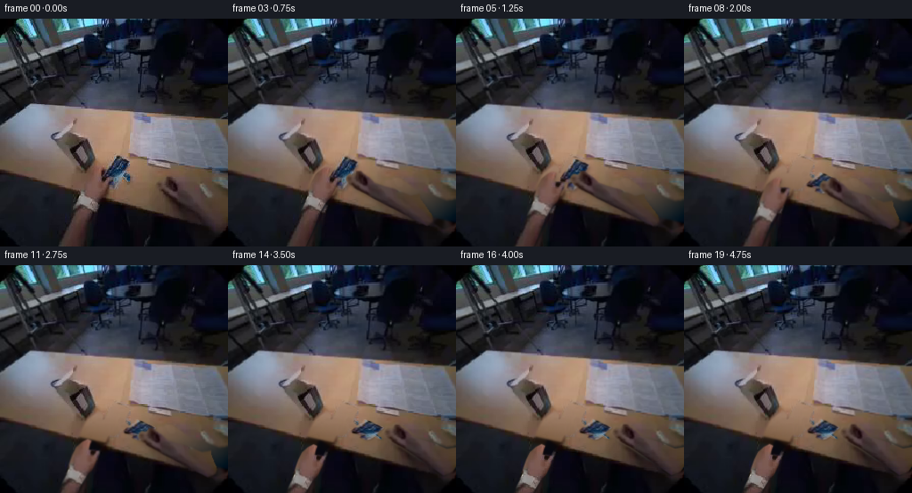
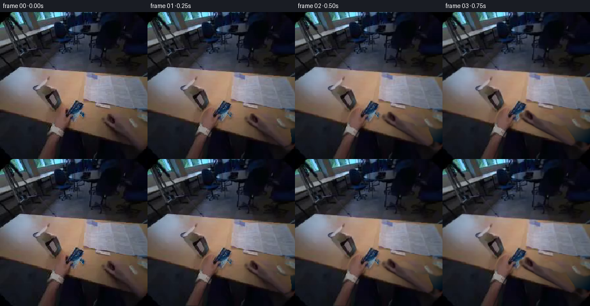
展开代码变化
--- 上一保存版本 +++ 本次保存版本 @@ -1,7 +1,7 @@ from pathlib import Path import numpy as np from PIL import Image, ImageDraw, ImageFilter -from scipy.ndimage import map_coordinates, gaussian_filter, distance_transform_edt +from scipy.ndimage import map_coordinates, gaussian_filter, distance_transform_edt, maximum_filter from scipy.spatial import Delaunay import artifact_io @@ -21,10 +21,11 @@ (98,174),(105,168),(111,165),(115,167),(113,173),(112,177), (119,177),(124,178),(123,184),(119,193),(116,199),(109,207), (103,217),(98,231),(87,255)]) -right=poly([(256,203),(245,205),(229,198),(218,195),(207,191), - (201,185),(195,181),(192,178),(187,178),(184,182),(179,181), - (176,184),(175,188),(179,193),(185,198),(195,203),(207,211), - (221,221),(241,235),(251,231),(256,224)]) +right=poly([(187,177),(193,179),(198,182),(202,187),(204,192), + (210,198),(219,204),(229,212),(242,220),(252,225),(256,227), + (256,239),(250,242),(241,238),(231,231),(219,222),(207,214), + (196,207),(187,201),(181,196),(176,192),(173,187),(176,182), + (180,181),(183,184),(184,180)],.8) packet=poly([(128,154),(133,155),(135,156),(141,158),(146,160), (143,167),(140,173),(140,176),(144,179),(145,183), (140,184),(137,180),(135,183),(132,188),(127,191), @@ -33,7 +34,7 @@ # The printed sachet, skin and watch all retain their source RGB textures. # Uncovering the table uses its observed illumination, not a new scene. remove=np.maximum.reduce([left,right,packet]) -remove=gaussian_filter((remove>.015).astype(float),1.4) +remove=gaussian_filter(maximum_filter((remove>.015).astype(float),size=5),1.0) # Estimate tabletop colour over its unoccluded area. edge=172+X*.218 valid=(Y>110)&(Y<edge-4)&(remove<.003) @@ -62,7 +63,7 @@ # Match the soft near edge of the actual wooden surface. f=1/(1+np.exp(np.clip((Y-edge)/.65,-40,40))) fill=table*f[...,None]+lap*(1-f[...,None]) -cleanup=np.clip(remove*1.12,0,1) +cleanup=np.clip(remove*1.3,0,1) PLATE=SRC*(1-cleanup[...,None])+fill*cleanup[...,None] # Piecewise affine textured limbs. At the bottom of the view the right
候选 03播放与检查图
候选 04播放与检查图
点击播放 · 原生 RGB 像素

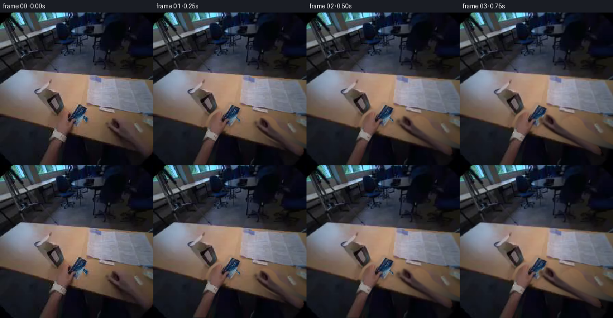
展开代码变化
--- 上一保存版本
+++ 本次保存版本
@@ -140,6 +140,18 @@
target=initial*(1-carry)+final*carry
# A small downward settling motion while the fingertips release.
prgb,pa=packet_warp(target)
+ # The foil straightens at contact: a pale sealed rectangular border
+ # is visible around the preserved blue printed face.
+ flat=smooth((carry-.72)/.28)
+ border=poly(target,.45)
+ newa=border
+ pale=np.stack([163+.6*np.sin(X*1.7+Y),177+.6*np.sin(X*1.7+Y),178+.6*np.sin(X*1.7+Y)],-1)
+ face=prgb*pa[...,None]+pale*(1-pa[...,None])
+ oldpremul=prgb*pa[...,None]
+ newpremul=face*newa[...,None]
+ blend_a=pa*(1-flat)+newa*flat
+ prgb=(oldpremul*(1-flat)+newpremul*flat)/np.maximum(blend_a[...,None],1e-6)
+ pa=blend_a
out=PLATE.copy()
# Separate soft hand and sachet contact shadows.
for a,amount,shift,blur in [(la,.16,2.4,2.5),(ra,.20,2.2,2.4),
候选 05播放与检查图
可观测工具轨迹
实际执行的命令与返回图片。
命令 1exit 0
/bin/bash -lc 'ls -la && cat prompt.txt && cat GENERATION_RULES.md'
命令 2exit 0
/bin/bash -lc "cat task_spec.json && cat artifact_io.py && python - <<'PY'
from PIL import Image
im=Image.open('first_frame.png'); im.resize((768,768)).save('.tmp/enlarged.png')
PY"命令 3exit 0
/bin/bash -lc "python - <<'PY'
from PIL import Image,ImageDraw
im=Image.open('first_frame.png')
im.crop((80,138,160,210)).resize((640,576)).save('.tmp/handcrop.png')
im.crop((165,162,256,244)).resize((546,492)).save('.tmp/rightcrop.png')
PY"命令 4exit 0
/bin/bash -lc "python - <<'PY'
from PIL import Image, ImageDraw
im=Image.open('first_frame.png').resize((1024,1024)); d=ImageDraw.Draw(im)
for x in range(0,256,10):
d.line((x*4,0,x*4,1024),fill=(250,30,30),width=1)
d.text((x*4+1,550),str(x),fill='yellow')
for y in range(140,256,10):
d.line((0,y*4,1024,y*4),fill=(250,30,30),width=1);d.text((260,y*4+1),str(y),fill='yellow')
im.save('.tmp/grid.png')
PY"命令 5exit 0
/bin/bash -lc "python - <<'PY' import importlib.util for s in ['scipy','cv2']: print(s,importlib.util.find_spec(s)) PY"
命令 6exit 0
/bin/bash -lc "python - <<'PY'
from PIL import Image
im=Image.open('first_frame.png'); im.crop((160,165,256,240)).resize((768,600),Image.Resampling.LANCZOS).save('.tmp/right_smooth.png')
PY"命令 7exit 0
/bin/bash -lc "cat > generate.py <<'PY'
from pathlib import Path
import numpy as np
from PIL import Image, ImageDraw, ImageFilter
from scipy.ndimage import map_coordinates, gaussian_filter, distance_transform_edt
from scipy.spatial import Delaunay
import artifact_io
ROOT=Path(__file__).resolve().parent
SRC=np.asarray(Image.open(ROOT/'first_frame.png').convert('RGB')).astype(float)
H=W=256
Y,X=np.mgrid[:H,:W].astype(float)
def poly(points,blur=.45):
im=Image.new('L',(W*4,H*4),0)
ImageDraw.Draw(im).polygon([(int(x*4),int(y*4)) for x,y in points],fill=255)
im=im.resize((W,H),Image.Resampling.LANCZOS)
if blur: im=im.filter(ImageFilter.GaussianBlur(blur))
return np.asarray(im).astype(float)/255
left=poly([(64,255),(70,239),(80,220),(85,208),(89,196),(94,182),
(98,174),(105,168),(111,165),(115,167),(113,173),(112,177),
(119,177),(124,178),(123,184),(119,193),(116,199),(109,207),
(103,217),(98,231),(87,255)])
right=poly([(256,203),(245,205),(229,198),(218,195),(207,191),
(201,185),(195,181),(192,178),(187,178),(184,182),(179,181),
(176,184),(175,188),(179,193),(185,198),(195,203),(207,211),
(221,221),(241,235),(251,231),(256,224)])
packet=poly([(128,154),(133,155),(135,156),(141,158),(146,160),
(143,167),(140,173),(140,176),(144,179),(145,183),
(140,184),(137,180),(135,183),(132,188),(127,191),
(121,188),(123,182),(116,181),(113,181),(114,177),
(119,169),(123,162),(126,158)],.25)
# The printed sachet, skin and watch all retain their source RGB textures.
# Uncovering the table uses its observed illumination, not a new scene.
remove=np.maximum.reduce([left,right,packet])
remove=gaussian_filter((remove>.015).astype(float),1.4)
# Estimate tabletop colour over its unoccluded area.
edge=172+X*.218
valid=(Y>110)&(Y<edge-4)&(remove<.003)
valid &= ~((X>52)&(X<109)&(Y<174))
valid &= ~((X>143)&(Y<174))
valid &= ~((X>228)&(Y<200))
valid &= ~((X<44)&(Y<126))
xx=(X-128)/128; yy=(Y-166)/90
features=np.stack([np.ones_like(X),xx,yy,xx*yy,xx*xx,yy*yy],-1)
coef=np.linalg.lstsq(features[valid],SRC[valid],rcond=None)[0]
for _ in range(3):
res=SRC[valid]-features[valid]@coef
wt=1/(1+(np.linalg.norm(res,axis=1)/12)**2)
coef=np.linalg.lstsq(features[valid]*wt[:,None],SRC[valid]*wt[:,None],rcond=None)[0]
table=features@coef
# Transfer fine tabletop texture from clean visible areas.
noise=SRC-gaussian_filter(SRC,(2.2,2.2,0))
texture=noise[(Y.astype(int)+13)%256,(X.astype(int)+43)%256]
texture=np.clip(texture,-2.5,2.5)
table+=texture*.6
# Recover obscured lap pixels by copying the nearest safe, same-surface pixels.
lapok=(Y>edge+4)&(remove<.001)
_,idx=distance_transform_edt(~lapok,return_indices=True)
lap=SRC[idx[0],idx[1]]
lap=gaussian_filter(lap,(1.4,1.4,0))
# Match the soft near edge of the actual wooden surface.
f=1/(1+np.exp(np.clip((Y-edge)/.65,-40,40)))
fill=table*f[...,None]+lap*(1-f[...,None])
cleanup=np.clip(remove*1.12,0,1)
PLATE=SRC*(1-cleanup[...,None])+fill*cleanup[...,None]
# Piecewise affine textured limbs. At the bottom of the view the right
# forearm is anchored, while the hand can reach across the tabletop.
def limb(dx,dy,kind):
xs=np.arange(-16,273,24,dtype=float)
ys=np.arange(-16,273,16,dtype=float)
gy,gx=np.meshgrid(ys,xs,indexing='ij')
p=np.stack([gx.ravel(),gy.ravel()],1)
q=p.copy()
if kind=='right':
w=np.clip((258-p[:,1])/54,0,1)
# The wrist follows the hand while the distal arm remains attached.
q[:,0]+=dx*w
q[:,1]+=dy*w
alpha=right
else:
q[:,0]+=dx
q[:,1]+=dy
alpha=left
tris=Delaunay(q)
pts=np.stack([X.ravel(),Y.ravel()],1)
ids=tris.find_simplex(pts)
use=ids>=0
T=tris.transform[ids[use]]
bary=np.einsum('nij,nj->ni',T[:,:2,:],pts[use]-T[:,2,:])
bary=np.c_[bary,1-bary.sum(1)]
orig=np.einsum('ni,nij->nj',bary,p[tris.simplices[ids[use]]])
coords=np.zeros((65536,2));coords[:]=-100;coords[use]=orig
coords=coords.reshape(H,W,2)
sam=[coords[...,1],coords[...,0]]
rgb=np.stack([map_coordinates(SRC[:,:,c],sam,order=1,mode='constant') for c in range(3)],-1)
a=map_coordinates(alpha,sam,order=1,mode='constant')
return rgb,a
# A perspective homography relaxes the crinkled packet as it is put flat.
def packet_warp(dest):
source=np.array([[128,154],[145,160],[128,190],[113,181]],float)
dest=np.asarray(dest,float)
A=[];b=[]
for (x,y),(u,v) in zip(source,dest):
A.extend([[x,y,1,0,0,0,-u*x,-u*y],[0,0,0,x,y,1,-v*x,-v*y]])
b.extend([u,v])
h=np.r_[np.linalg.solve(A,b),1].reshape(3,3)
inv=np.linalg.inv(h)
coords=inv@np.stack([X.ravel(),Y.ravel(),np.ones(H*W)])
coords=(coords[:2]/coords[2:]).reshape(2,H,W)
sam=[coords[1],coords[0]]
a=map_coordinates(packet,sam,order=1,mode='constant')
rgb=np.stack([map_coordinates(SRC[:,:,c],sam,order=1,mode='constant') for c in range(3)],-1)
return rgb,a
def composite(bg,rgb,mask):return bg*(1-mask[...,None])+rgb*mask[...,None]
def smooth(a):return (np.clip(a,0,1)**2)*(3-2*np.clip(a,0,1))
initial=np.array([[128,154],[145,160],[128,190],[113,181]],float)
final=np.array([[153,172],[173,181],[155,195],[138,187]],float)
frames=[SRC.astype(np.uint8)]
for i in range(1,20):
t=i/4
reach=smooth(t/1.0)
carry=smooth((t-1.0)/1.15)
release=smooth((t-2.15)/.6)
retreat=smooth((t-2.6)/1.0)
# Right hand first closes around the sachet, then sets it down.
rdx=(-51*reach+29*carry)*(1-retreat)
rdy=(-9*reach+9*carry+4*release)*(1-retreat)
lrel=smooth((t-.85)/.8)
lout=smooth((t-1.8)/1.4)
ldx=-5*lrel-10*lout
ldy=10*lrel+25*lout
lrgb,la=limb(ldx,ldy,'left')
rrgb,ra=limb(rdx,rdy,'right')
target=initial*(1-carry)+final*carry
# A small downward settling motion while the fingertips release.
prgb,pa=packet_warp(target)
out=PLATE.copy()
# Separate soft hand and sachet contact shadows.
for a,amount,shift,blur in [(la,.16,2.4,2.5),(ra,.20,2.2,2.4),
(pa,.20,2.5-1.9*carry,1.7-1.0*carry)]:
sh=map_coordinates(a,[Y-shift,X-1.1],order=1,mode='constant')
sh=gaussian_filter(sh,blur)*f
out*=1-sh[...,None]*amount
out=composite(out,lrgb,la)
out=composite(out,prgb,pa)
# The right fingertips occlude the sachet only during its grasp.
out=composite(out,rrgb,ra)
# Minute body-mounted-camera drift, no unrelated scene motion.
lean=smooth(t/1.4)*(1-.45*smooth((t-3.0)/1.3))
scale=1+.008*lean
cx=128;cy=151
sx=(X-cx)/scale+cx-.35*lean
sy=(Y-cy)/scale+cy-1.0*lean
out=np.stack([map_coordinates(out[:,:,c],[sy,sx],order=1,mode='nearest') for c in range(3)],-1)
frames.append(np.clip(out,0,255).astype(np.uint8))
frames=np.stack(frames)
artifact_io.save(frames,ROOT)
Image.fromarray(np.clip(PLATE,0,255).astype(np.uint8)).save(ROOT/'.tmp/plate.png')
PY
python generate.py"命令 8exit 0
/bin/bash -lc "python - <<'PY'
from PIL import Image
for n in ['05','08','19']:
Image.open('frames/'+n+'.png').resize((768,768)).save('.tmp/f'+n+'.png')
PY"命令 9exit 0
/bin/bash -lc "python - <<'PY'
from PIL import Image,ImageDraw
im=Image.open('first_frame.png').resize((1536,1536)); d=ImageDraw.Draw(im)
for x in range(165,257,5):
d.line((x*6,170*6,x*6,245*6),fill=(200,40,50));d.text((x*6+1,170*6),str(x),fill='yellow')
for y in range(175,246,5):
d.line((165*6,y*6,256*6,y*6),fill=(200,40,50));d.text((166*6,y*6),str(y),fill='yellow')
im.crop((165*6,170*6,256*6,245*6)).save('.tmp/rightgrid.png')
PY"命令 10exit 0
/bin/bash -lc "python - <<'PY'
p='generate.py'
s=open(p).read().replace('from scipy.ndimage import map_coordinates, gaussian_filter, distance_transform_edt','from scipy.ndimage import map_coordinates, gaussian_filter, distance_transform_edt, maximum_filter')
a=s.index('right=poly(');b=s.index('packet=poly(',a)
s=s[:a]+'''right=poly([(187,177),(193,179),(198,182),(202,187),(204,192),
(210,198),(219,204),(229,212),(242,220),(252,225),(256,227),
(256,239),(250,242),(241,238),(231,231),(219,222),(207,214),
(196,207),(187,201),(181,196),(176,192),(173,187),(176,182),
(180,181),(183,184),(184,180)],.8)
'''+s[b:]
s=s.replace('remove=gaussian_filter((remove>.015).astype(float),1.4)','remove=gaussian_filter(maximum_filter((remove>.015).astype(float),size=5),1.0)')
s=s.replace('cleanup=np.clip(remove*1.12,0,1)','cleanup=np.clip(remove*1.3,0,1)')
open(p,'w').write(s)
PY
python generate.py"命令 11exit 0
/bin/bash -lc "python - <<'PY'
p='generate.py';s=open(p).read();s=s.replace('prgb,pa=packet_warp(target)\\n out=PLATE.copy()', '''prgb,pa=packet_warp(target)
# The foil straightens at contact: a pale sealed rectangular border
# is visible around the preserved blue printed face.
flat=smooth((carry-.72)/.28)
border=poly(target,.45)
newa=border
pale=np.stack([163+.6*np.sin(X*1.7+Y),177+.6*np.sin(X*1.7+Y),178+.6*np.sin(X*1.7+Y)],-1)
face=prgb*pa[...,None]+pale*(1-pa[...,None])
oldpremul=prgb*pa[...,None]
newpremul=face*newa[...,None]
blend_a=pa*(1-flat)+newa*flat
prgb=(oldpremul*(1-flat)+newpremul*flat)/np.maximum(blend_a[...,None],1e-6)
pa=blend_a
out=PLATE.copy()''')
open(p,'w').write(s)
PY
python generate.py"命令 12exit 0
/bin/bash -lc "python - <<'PY'
import numpy as np
from PIL import Image
from pathlib import Path
frames=np.stack([np.asarray(Image.open(p)) for p in sorted(Path('frames').glob('*.png'))])
assert frames.shape==(20,256,256,3)
assert frames.dtype==np.uint8
assert np.array_equal(frames[0],np.asarray(Image.open('first_frame.png').convert('RGB')))
print('Validated 20 RGB frames, 256x256, first frame identical.')
print('Files:', ', '.join(p.name for p in Path('.').glob('*') if p.is_file()))
PY"视觉工具实际返回图片 1
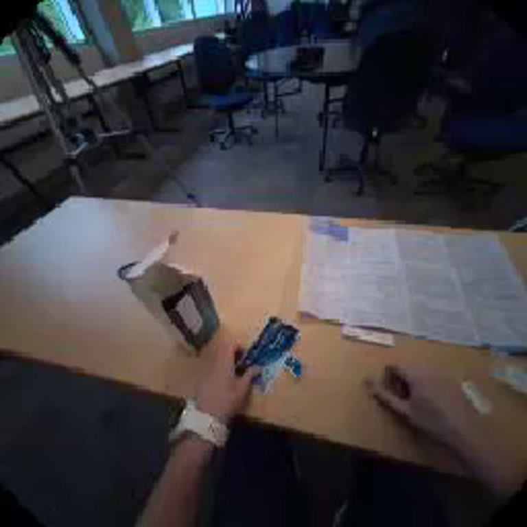
视觉工具实际返回图片 2
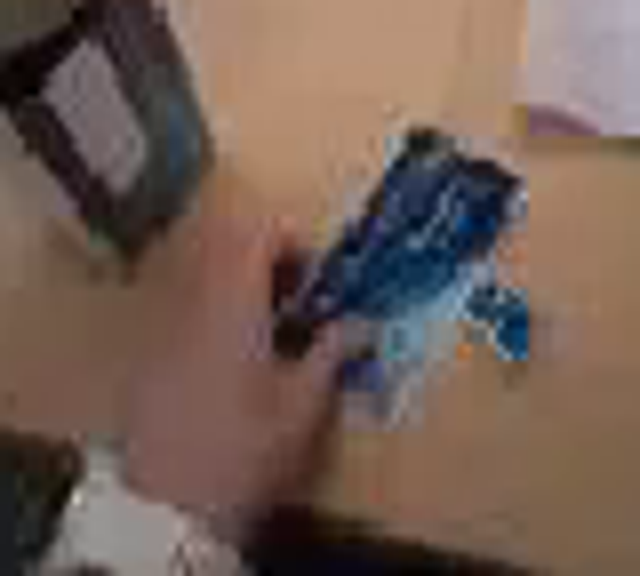
视觉工具实际返回图片 3
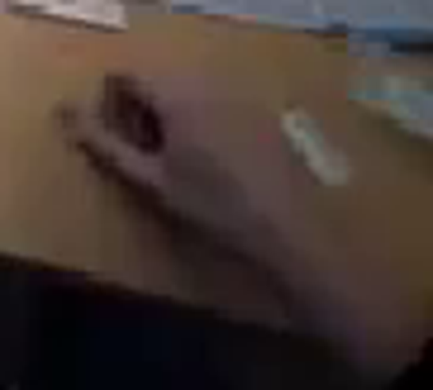
视觉工具实际返回图片 4
视觉工具实际返回图片 5

视觉工具实际返回图片 6
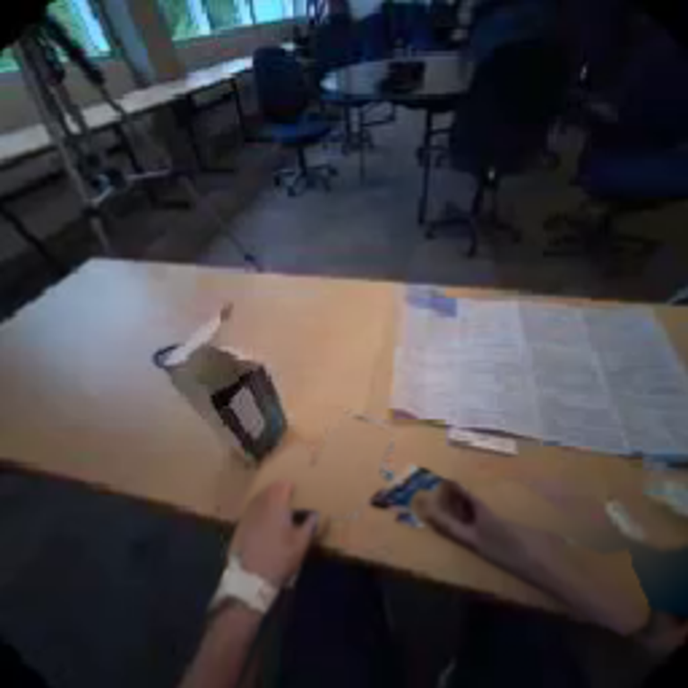
视觉工具实际返回图片 7
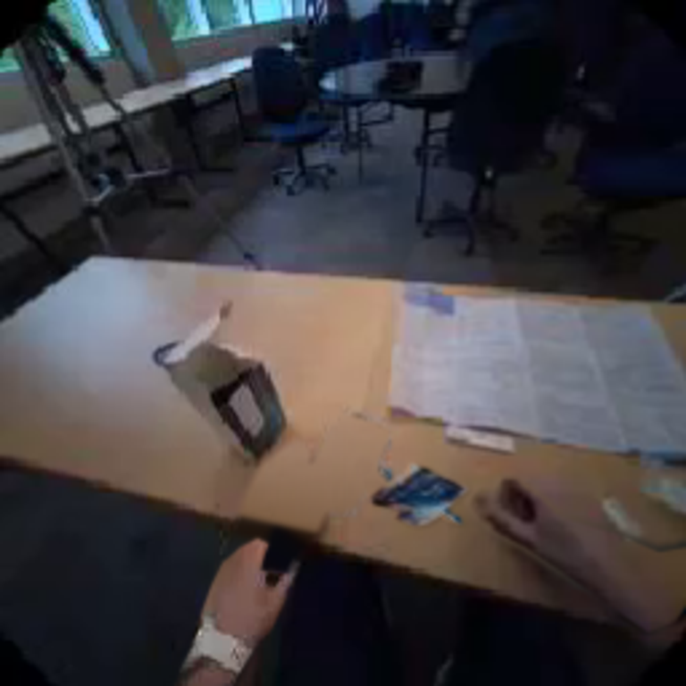
视觉工具实际返回图片 8
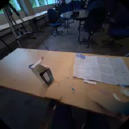
视觉工具实际返回图片 9
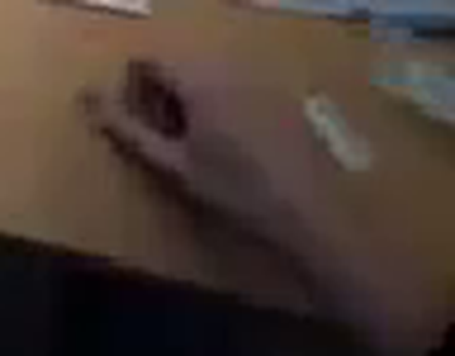
视觉工具实际返回图片 10
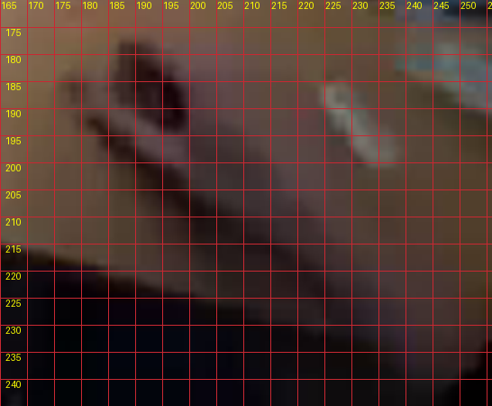
视觉工具实际返回图片 11

视觉工具实际返回图片 12

保存候选 5 份；完成命令 12 次；可验证图片返回 12 张。原始 API 响应与完整日志保留在本地。